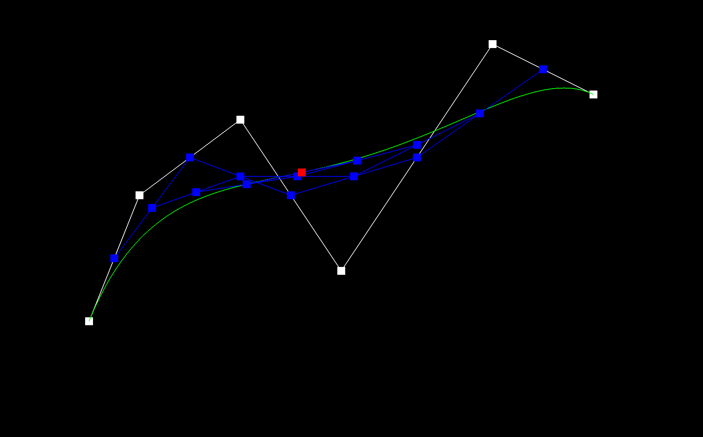
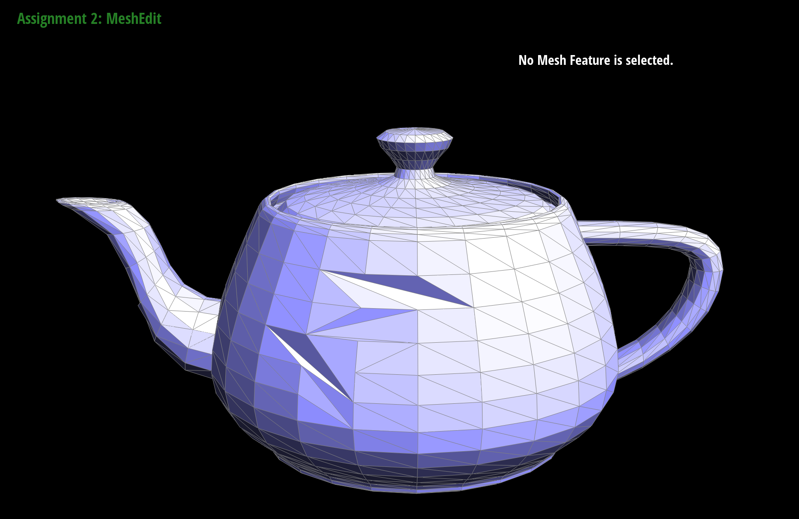
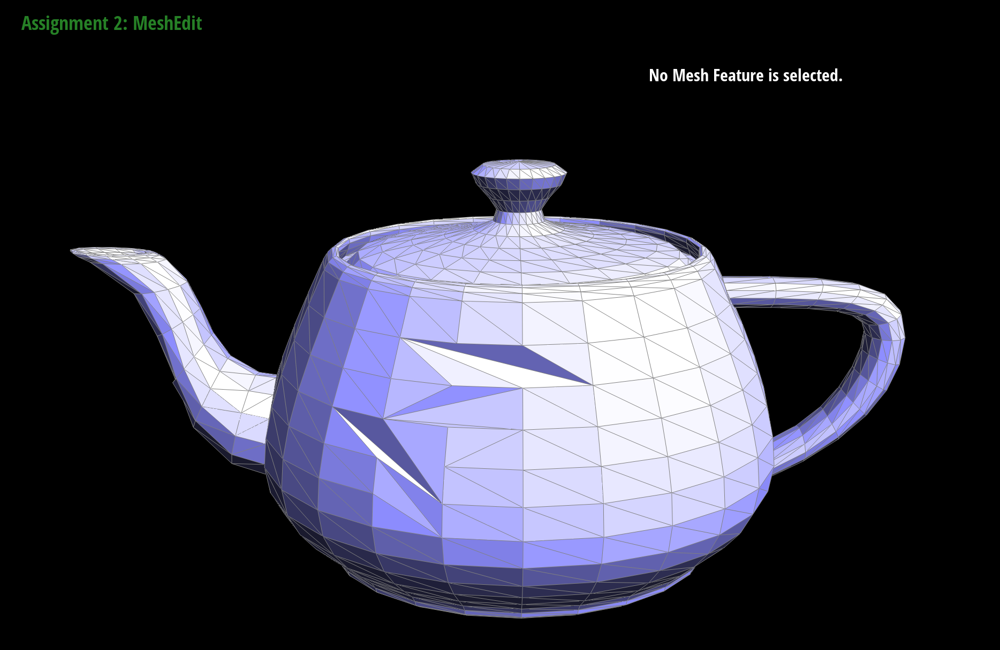
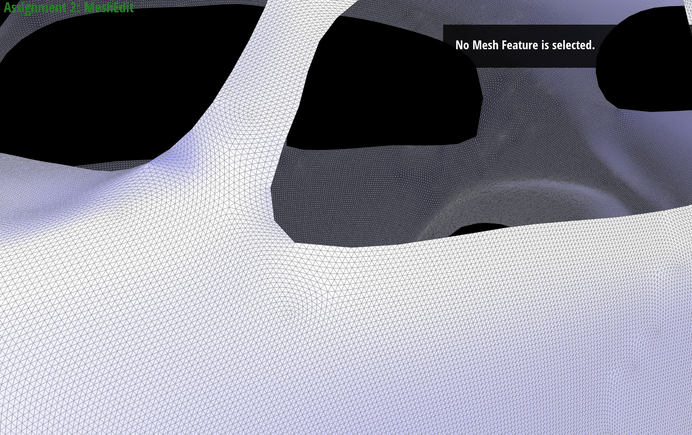

Overview
In this project, I implemented various algorithms and techniques related to mesh editing. Such tasks include the evaluation of Bezier curves and surfaces using de Casteljau's algorithm, the implementation of area-weighted vertex normals, and the execution of edge flip and edge split operations. The project also involves the technique of Loop subdivision for mesh upsampling. Overall through this project I was able to gain a deeper understanding the fundamentals of mesh editing and the algorithms used to manipulate and transform meshes.
Section I: Bezier Curves and Surfaces
Part 1: Bezier Curves with 1D de Casteljau Subdivision
I used De Casteljau's algorithm for evaluating Bezier curves. This algorithm operates by linearly interpolating between points on the curve, progressively reducing the number of points until only one point remains. This final point is the value of the Bezier curve at a specific parameter. In my implementation, I utilized a vector to hold the control points of the Bezier curve and also took in the parameter t. I then implemented de Casteljau's algorithm by iteratively generating new vectors of points where each new point is a linear interpolation between two points from the preceding iteration. This procedure is repeated until we are left with a single point, which signifies the position on the Bezier curve for the parameter.
Bezier curve with 6 control points evaluated by my implementation:
|
|

|
|
|
|
|
|

|
Slightly different Bezier curve by moving the original control points around and modifying the parameter \(t\) via mouse scrolling.
Part 2: Bezier Surfaces with Separable 1D de Casteljau
Extending de Casteljau's algorithm to Bezier surfaces involves applying the algorithm in two dimensions. Instead of interpolating between points on a curve, we interpolate between points on a grid. The process is similar to the 1D case, but it is applied twice: once for each parameter In my implementation, I first created a vector of points for each row in the grid, using the parameter u. I then applied de Casteljau's algorithm to each of these vectors, resulting in a new vector of points. Finally, I applied de Casteljau's algorithm to this final vector using the parameter v, resulting in the final point on the Bezier surface. This process is encapsulated in the evaluate function, which takes two parameters, u and v, and returns the final point on the Bezier surface. The function first creates a vector of points for each row in the grid (u_curve). It then applies de Casteljau's algorithm to each of these vectors using the parameter u, resulting in a new vector of points (u_curve). Finally, it applies de Casteljau's algorithm to this final vector using the parameter v, resulting in the final point on the Bezier surface.
bez/teapot.bez evaluated by my implementation:
Section II: Triangle Meshes and Half-Edge Data Structure
Part 3: Area-Weighted Vertex Normals
Here, I implemented area-weighted vertex normals to allow for Phong shading, which is better than flat shading. I first began by initializing a zero vector. Then, I iterated over each neighboring face of the vertex using a halfedge iterator. For each face, I computed the face normal by taking the cross product of two edge vectors of the face, which is perpendicular to both triangles. The area of the face was then calculated as half of the norm of the face normal. The face normal was then normalized and scaled by the face area, and added to the accumulated normal vector. Finally, the accumulated normal vector was normalized to get the unit normal at the vertex.
Screenshots of dae/teapot.dae (not .bez) comparing teapot shading with and without vertex normals. Used Q to toggle default flat shading and Phong shading.
With Vertex Normals
Without Vertex Normals
Part 4: Edge Flip
To implement the edge flip operation I did not add any new vertices, edges, or faces to the mesh. Instead I used the setNeighbors to set all the parameters of the halfedges. In order to determine how to set each vertex/face/edge, I drew a picture, defined the same variables in the code as my picture, and then used the setNeighbors function to set the parameters of the halfedges. I also set the faces, edges, and vertices to their respective halfedges.
Before and after some edge flips:
 

My eventful debugging journey:
I think I was able to debug using the picture that I had drawn of the operation. I also used the check_for function to see if a vertex was included in its respective halfedge's parameters. For a while, I think I was confused and believed that there was a bug in my code, but after dragging around the vertices I realized that my code was fine and it was actually expected behavior.
Part 5: Edge Split
I implemented the edge split operation by first checking if the edge was a boundary edge. If it was, the halfedge was set to its twin. Then, new edges and halfedges were created. The vertices of the halfedges were set, with the new vertex's position being the midpoint of the original edge. The halfedges were then set to their neighbors, vertices, edges, and faces. If the edge was not a boundary edge, the process was similar but with more halfedges and vertices involved due to the additional faces. For debugging, I used a combination of drawing out the mesh and using the setNeighbors function to ensure that the halfedges were correctly set.
Before Split
After Some Split Operations
Before and after a combination of both edge splits and edge flips:

My eventful debugging journey:
Similar to the edge flip operation, I was able to debug using the picture that I had drawn of the operation. I also made sure to check that all the vertices were accounted for in the halfedge's parameters.
Support for boundary edges:
Part 6: Loop Subdivision for Mesh Upsampling
The implementation of the loop subdivision involved several steps. First, I computed new positions for all the vertices in the input mesh using the Loop subdivision rule, and stored them in Vertex::newPosition. I also marked each vertex as being a vertex of the original mesh. Next, I computed the updated vertex positions associated with edges, and stored it in Edge::newPosition. Then, I split every edge in the original mesh. To find all the original mesh edges, I first populated a an EdgeIter. I also set the Edge::isNew in the splitEdge function to set new edges to be marked as being new. I then used the EdgeIter to iterate over all the edges in the original mesh and set the new positions of the edges. After that, I flipped any new edge that connects an old and new vertex. Finally, I copied the new vertex positions into final Vertex::position and set all the isNew flags to false for both vertices and edges.
cow.dae after loop subdivision: After applying loop subdivision, the sharp corners and edges of the mesh become significantly smoother. This is due to the averaging process in the subdivision algorithm, which tends to round off sharp features. However, this can sometimes lead to a loss of detail in the mesh, especially in areas where sharp features are important for the overall shape of the object. One way to reduce this effect is by pre-splitting some edges before applying the subdivision. By adding more vertices to the mesh in strategic locations, we can guide the subdivision process and maintain more control over the final shape of the object. This can help to preserve sharp features and reduce the smoothing effect of the subdivision. However, this can increase the complexity of the mesh and may lead to other issues, such as irregularities in the mesh structure. Therefore, it's important to use this technique judiciously and in combination with other mesh editing tools.
For dae/cube.dae, we observe that after several iterations of loop subdivision, the cube comes slightly asymmetric. This is due to the initial triangulation of the cube's faces. They are initially divided into two triangles and the choice of diagonal leads to asymmetry when perofrming loop subdivision. To ensure symmetric subdivision, I performed an edge flip on each face of the cube to make sure that each face is symmetrically subdivided.
|
|
|
|
|
|
For extra credit, I supported meshes with boundaries. This involved supporting boundaries in the splitEdge function. I implemented this by checking if the edge was a boundary edge and if it was, the halfedge was set to its twin. Otherwise, the halfedge was itself. I then implemented logic to split the selected halfedge. I also had to calculate a different weighted average for the boundary vertices, which was just the midpoint of two vertices on the boundary edge.
Beetle
Beetle Close-Up